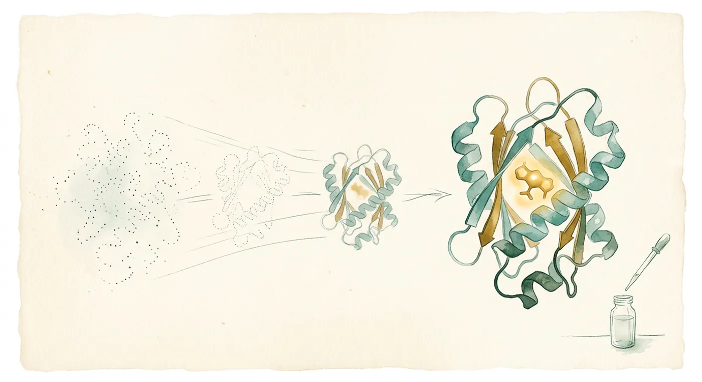

FRONTIER WATCH 04 / 前沿观察
AI 从头设计的酶，第一次催化了一种艾滋病预防药的关键一步。

结论先说：Baker 实验室（2024 年诺贝尔化学奖得主 David Baker）和 NVIDIA 合作发布了蛋白质设计模型 RFD4-Proteina。它把序列、结构和周围分子放在同一个“潜空间”里一起生成，并且可以对难题多花算力去“想”。电脑里的成功率和速度都大幅领先；在实验台上，针对艾滋病预防药 lenacapavir 合成中的一步，67 个设计里有 4 个真的有活性，最好的把 79% 的原料转化成了目标产物。这是预印本，还没有同行评审。
00先看作者的原帖
嵌入的是共同第一作者 Kieran Didi（NVIDIA）的原帖。另一位共同第一作者 Nathaniel Corley（华盛顿大学）的原帖不支持嵌入，可直接打开：到 LinkedIn 观看 Corley 原帖 ↗ · Didi 原帖 ↗
01先说清楚：“从头设计蛋白质”是什么意思
我们熟悉的蛋白质——抗体、酶、激素——都是自然界里已经有的。过去要做一个有新功能的蛋白，基本是在天然蛋白上改几个氨基酸。“从头设计（de novo design）”是另一条路：先说清楚“我要一个能抓住某个分子、或者能催化某个反应的东西”，再让模型凭空造出一串自然界不存在的氨基酸序列和它对应的三维结构。
对临床的意义不在于“马上能用”，而在于三件事会变便宜变快：药物（尤其是生物药和原料药合成用的酶）、抗体、诊断试剂里的识别分子。
- 统一的“潜空间”：标准氨基酸、修饰氨基酸、糖、DNA、RNA 都用同一套表示，并用 Rosetta 力场（物理能量）去约束，让生成的原子位置更合乎物理。
- 序列和结构一起生成：同时决定“用哪些氨基酸”和“摆成什么形状”，还能同时调整它要结合的那个分子的构象，而不是把对方当成固定不动的石头。
- 可以“多想一会儿”：论文把它分成内部反复精修（intrinsic reasoning，类似大模型的“思考预算”）和外部搜索（extrinsic reasoning，用 AlphaFold3、力场等外部工具提前砍掉没希望的路线）。
打个比方：以前的做法像照着模板裁衣服——先选一个大致合身的版型，再改袖长。RFD4-Proteina 更像一个能边量体、边画版、边考虑布料垂坠的裁缝：顾客（目标分子）站的姿势也允许微调，难做的款式就多花时间打几次样。
同一步里多算几遍，把细节改到位。论文把算力档位叫 low / medium / high thinking。
生成过程中按阶段检查（界面面积 → 氢键 → AF3 置信度），不合格的半成品提前扔掉。
02它在“电脑里”有多强
本站据预印本图 2 与正文数值自绘，不是论文原图。“聚类通过率”= 每 200 次尝试里，用 AlphaFold3 重新折叠后通过标准、且彼此结构不重复的设计数量占比。小分子结合任务上 77 个靶标全部有通过设计，次优模型是 64 个。
从 low 到 medium 到 high，聚类通过率：蛋白结合 7.7% → 9.7% → 10.6%，小分子结合 12.1% → 12.6% → 14.3%，酶支架 9.8% → 10.6% → 12.1%，DNA 结合 2.8% → 3.0% → 3.5%。换句话说，多花算力换来的是几个百分点，而吞吐量会掉一半以上。
03实验台上真正发生了什么
这是最值得临床医生看的部分：电脑里的成功率和试管里的成功率不是一回事。下面都是预印本报告的湿实验结果。
lenacapavir（艾滋病预防药）合成中的一步：设计一个成酰胺键的酶
设计 58：(S) 61.7% vs (R) 14.6%；无酶对照分别是 4.3% 和 6.2%。作为对比，上一代模型 RFD3 做同一任务，72 个设计里一个都没成。作者称这是第一个由 AI 从头设计、能催化原料药合成某一步的酶的概念验证。
很多药物分子有左右手之分（对映体），只有一只手有效，另一只可能无效甚至有害。这个设计出来的酶明显偏好需要的 (S) 构型，而且抑制住了水解这个竞争反应——在大量水存在的体系里，这一点并不容易。
- 农药降解酶：八残基活性位点，1,000 个设计中 15 个通过计算筛选（同一标准下 RFD3 的 10,000 个一个都没通过）；实测 288 个里 89 个有活性，最好的催化效率 kcat/KM = 3,600 ± 500 M⁻¹s⁻¹，比上一代设计高 10–1000 倍。
- TrkA 结合蛋白（神经病理性疼痛和神经母细胞瘤的靶点）：188 个设计里 158 个亲和力优于微摩尔级（84%），此前最好的一次活动是 18/60（30%）。
- 钙调蛋白：18 个设计里 12 个实现了“只在结合钙时才结合”的构象特异性。
- 磷酸化识别：针对组蛋白 H3 尾部的 pS10 和 pT11 两个相邻磷酸化位点，分别得到能区分彼此的结合蛋白。
- 糖基化控制：设计出能挡住糖链被继续加工、同时保留末端甘露糖暴露的小蛋白。
04冷静看：证据还差什么
| 问题 | 具体情况 |
|---|---|
| 没有同行评审 | 预印本第一页就写着 This preprint has not been peer reviewed（CC BY 4.0）。所有数字都还没有外部审稿人核验过。 |
| 计算成绩 ≠ 实验成绩 | “成功率提高 5–10 倍”说的是电脑里的通过率。酶那一项真正下场测试的命中率是 4/67，大约 6%。两个数字不能混着讲。 |
| 评判标准自己定 | “通过”与否由 AlphaFold3 重新折叠后的结构吻合度和置信度判定。这是领域通行做法，但仍是模型评模型。 |
| 离“药”还很远 | 酶只做到了实验室规模的一步反应；结合蛋白只测了亲和力和特异性。没有动物实验、没有安全性、没有规模化生产数据。 |
| 挑任务 | 论文自己说，容易的任务或者目标到很晚才分得清的任务，外部搜索省下的算力抵不上开销。各任务表现差别很大（DNA 结合只有 3.5%）。 |
| 门槛 | 要用得上，需要 NVIDIA GPU 和 CUDA 环境；代码和权重开源（BSD-3，仓库 RosettaCommons/RFD4-Proteina），但普通临床科室不具备验证条件。 |
| 新闻稿与社交媒体的说法 | “成功率和速度都是 5–10 倍”来自曼彻斯特大学新闻稿与 UW 新闻稿；“某些基准上是次优模型的 3–5 倍、每 GPU 小时常常接近一个数量级”来自作者本人的社交媒体串。这些都已标注来源，不等同于论文结论。 |
05对我们医生意味着什么
从头设计蛋白质的效率在明显提高，并且第一次做到了“设计的酶参与原料药合成”。模型、权重、训练和评测代码都开源。
如果这条路走通，受影响最大的是生物药和原料药的制造成本（lenacapavir 之所以被选中，正是因为生产成本限制了它在全球推广），其次是抗体和诊断试剂的研发周期。这是产业层面的联想，不是论文结论。
对临床医生来说，近几年更现实的用处是读懂这类论文：当药企或科研合作方说“AI 设计的分子”，你要能追问“电脑里的通过率还是实验命中率”。这是我的教学判断。
没有同行评审，没有独立复现，没有体内数据。开源之后谁来复现、能不能在别人的手里得到同样的命中率，是接下来几个月最值得看的事。
模型“多想一会儿”的思路，和训练营里讲的循环与评估是同一回事：循环工程入门：让 AI 自己检查、自己改 · 智能体完整课：从入门到上线。
06课堂练习：分清“电脑里成功”和“实验里成功”
原始来源：Corley N, Didi K, Kazman MW, Brent RI, et al. Biomolecular design through latent reasoning with RFD4-Proteina. 预印本，2026-10-21，CC BY 4.0。预印本全文 PDF ↗ · 项目网站 ↗ · 开源代码（BSD-3）↗ · 模型权重 ↗ · 曼彻斯特大学新闻稿（phys.org，2026-10-23）↗ · 作者 Corley 的 LinkedIn 原帖 ↗。本页是 aiai 学院的中文解读，数字以预印本原文为准；“合理联想”“我的设想”属个人观点，不构成医疗建议。